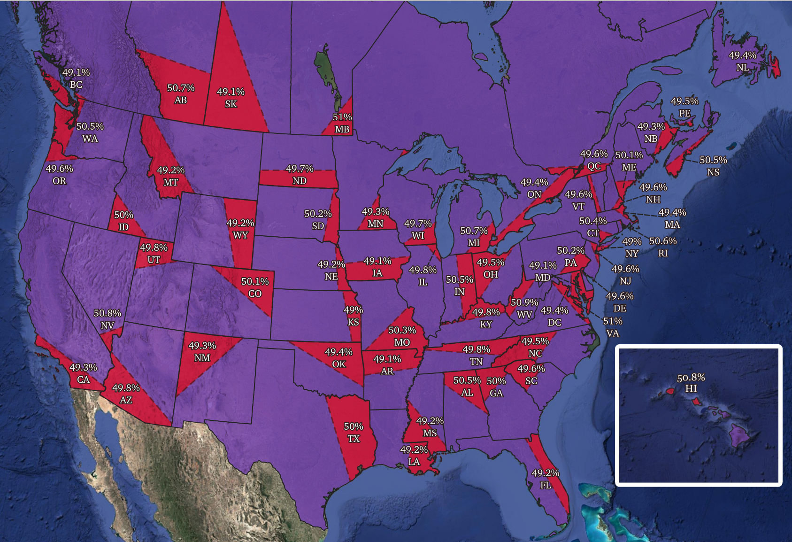
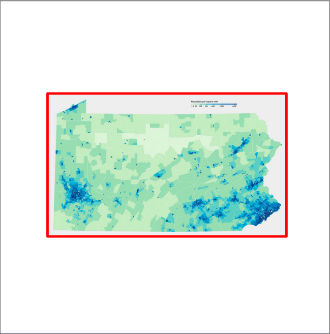
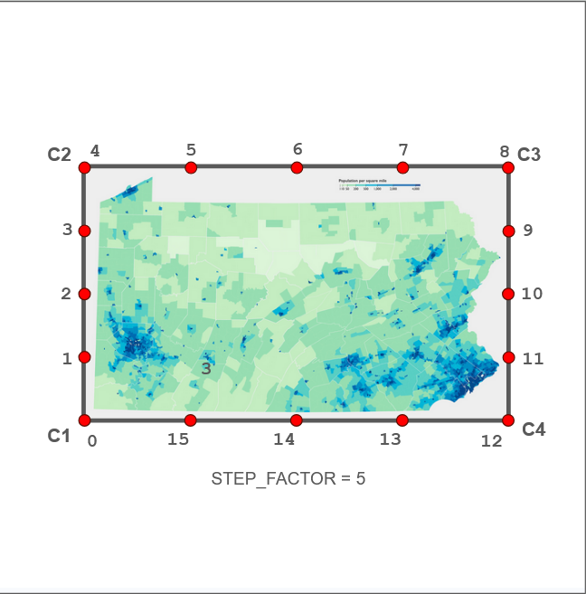
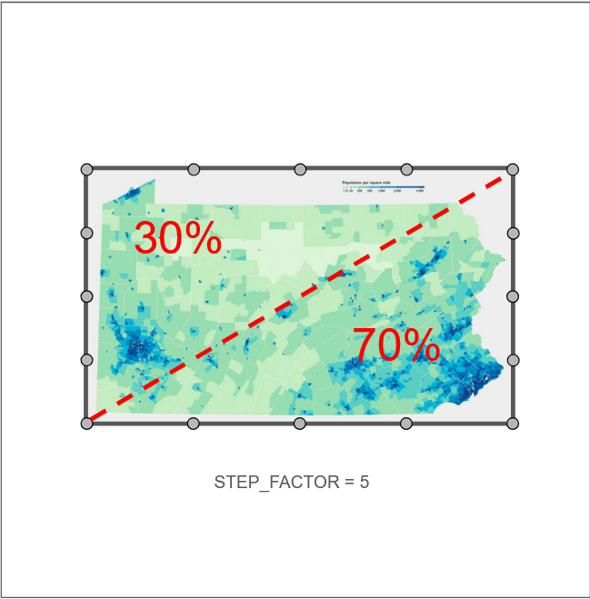
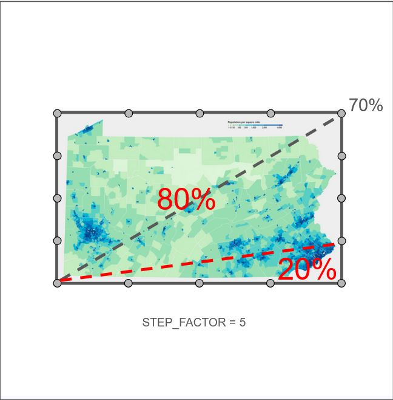
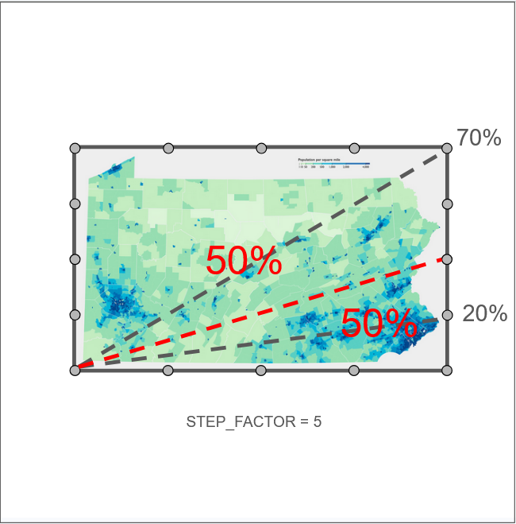
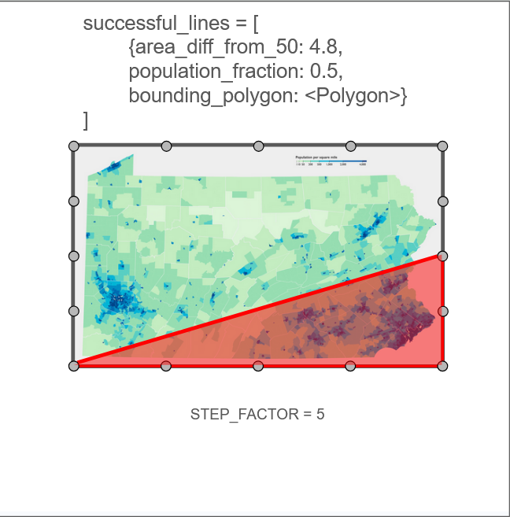
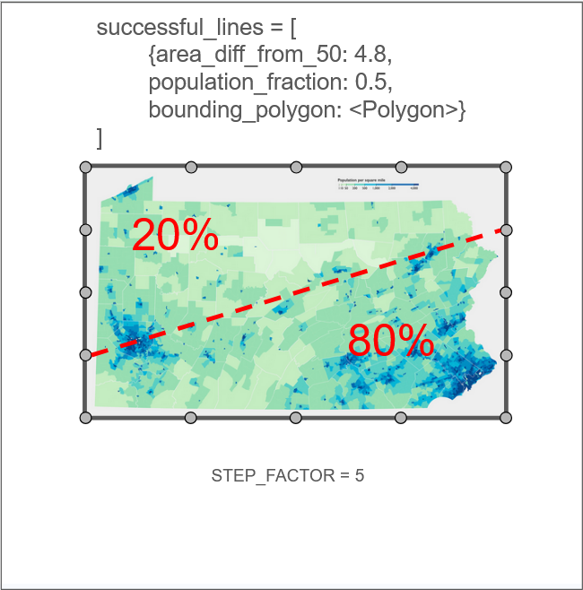
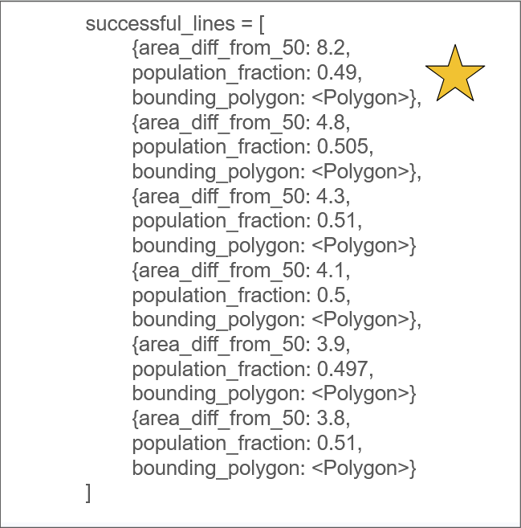

Splitting the Difference
A project by Kiran McCulloch
We've all seen an image online touting how "90% of the population lives below this line" or explaining why "no one lives here" about a seemingly huge area of land. These types of images are interesting at first glance, but rarely provide much detail beyond the main factoid and rarely share their methodology, often being based on guesses or otherwise so ancient that no one remembers the author any more. Armed with GIS skills, I knew I could do a better and more accurate (and hopefully, thus, more interesting) job of it. Accordingly, my goals for this project were:
- To recreate a similar genre of visualization, based on a logical process and as granulary detailed as possible, and
- To create and provide a tool to do the same for any area on Earth, given access to the underlying data.

The above image shows 49 US States and the 10 Canadian Provinces, each split into two parts by a line that maximizes the area discrepancy but keep the population on either side as close to the same as possible. A label shows the percentage of the population within the smaller half above the abbreviation of the subdivision.
An interactive version of the initial map. Hover over city markers to see details, and click on subdivisions and their splits for more information.
About
How I Made This
Data Acquisition and Setup
To start, I needed population raster data for both countries. For this, I used WorldPop, and chose 2021 and 2020 for Canada and the US, respectively, to match when each nation conducted its most recent census. I chose the 100m data to get the finest granularity possible. This data is provided in WGS84, and since reprojecting raster data introduces all sorts of inaccuracies and distortions in terms of population, all my calculations and processing steps were done in this projection.
I also, of course, needed shapefile boundaries for each country. I got the Digital Boundary File for the Canadian Provinces from Open Data Canada and the Cartographic Boundary Files for the United States from the US Census Bureau.
I also set up a new Conda environment for this project. The main libraries I used were Rasterio, GeoPandas, Shapely, and Folium, but a full list is provided below.
# Name Version Build Channel
affine 2.4.0 py314haa95532_0
aom 3.12.1 h00a0c3c_0
asttokens 3.0.1 py314haa95532_0
attrs 26.1.0 py314h35db113_0
blas 1.0 openblas
blosc 1.21.6 h4190f5b_0
branca 0.8.1 py314haa95532_1
brotlicffi 1.2.0.0 py314h885b0b7_0
bzip2 1.0.8 h2bbff1b_6
ca-certificates 2026.4.22 h4c7d964_0 conda-forge
cairo 1.18.4 he9e932c_0
certifi 2026.4.22 py314haa95532_0
cffi 2.0.0 py314h02ab6af_1
charset-normalizer 3.4.4 py314haa95532_0
click 8.0.3 pyhd3eb1b0_0
cligj 0.7.2 pyhd3eb1b0_0
colorama 0.4.6 py314haa95532_0
comm 0.2.3 py314haa95532_0
contourpy 1.3.3 py314h214f63a_0
cycler 0.12.1 py314haa95532_0
dav1d 1.2.1 h2bbff1b_0
debugpy 1.8.16 py314h885b0b7_1
decorator 5.2.1 py314haa95532_0
executing 2.2.1 py314haa95532_0
expat 2.7.5 hd7fb8db_0
folium 0.20.0 py314haa95532_0
fontconfig 2.15.0 hd211d86_0
fonttools 4.62.1 py314h1c6eee0_0
freeglut 3.8.0 hfcef157_0
freetype 2.14.1 hfbffc0b_0
freexl 2.0.0 hd7a5696_0
fribidi 1.0.16 haf45083_0
geopandas 1.1.3 py314haa95532_0
geopandas-base 1.1.3 py314haa95532_0
geos 3.10.6 he74ecf9_0
geotiff 1.7.4 hfa75976_0
graphite2 1.3.14 hd77b12b_1
harfbuzz 12.3.0 h3ef6528_1
icu 73.1 h6c2663c_0
idna 3.11 py314haa95532_0
ipykernel 7.2.0 py314h56ec5ee_0
ipython 9.11.0 py314haa95532_0
ipython_pygments_lexers 1.1.1 py314haa95532_0
jedi 0.19.2 py314haa95532_0
jinja2 3.1.6 py314haa95532_0
joblib 1.5.3 py314haa95532_0
jpeg 9f ha349fce_0
jupyter_client 8.8.0 py314haa95532_0
jupyter_core 5.9.1 py314haa95532_0
kiwisolver 1.4.9 py314h03f52e7_0
krb5 1.22.2 h0ea6238_0 conda-forge
lcms2 2.17 h3732fa5_0
lerc 4.1.0 hd7fb8db_1
libarchive 3.8.2 h6c023e8_0
libavif 1.3.0 h5bd13ec_0
libbrotlicommon 1.2.0 h907acca_0
libbrotlidec 1.2.0 h02c67a5_0
libbrotlienc 1.2.0 h483e6b9_0
libcurl 8.19.0 h19d1b0a_0
libdeflate 1.22 h2466b09_0 conda-forge
libexpat 2.7.5 hd7fb8db_0
libffi 3.4.8 h2b21627_2
libgdal-core 3.11.4 h1a31cef_2
libglib 2.86.3 h9bccc14_0
libiconv 1.18 hc89ec93_0
libkml 1.3.0 h63940dd_7
libkrb5 1.22.1 hb237eb7_0
libmpdec 4.0.0 h827c3e9_0
libopenblas 0.3.31 h9d64744_1
libopenjpeg 2.5.4 h02ab6af_1
libpng 1.6.56 h2854ad3_0
libsodium 1.0.21 h19b670b_0
libspatialite 5.1.0 hc42ffd2_3
libssh2 1.11.1 h2addb87_0
libtiff 4.7.1 h3a18249_0
libwebp-base 1.6.0 hbf3958f_0
libxml2 2.13.9 h6201b9f_0
libzlib 1.3.1 h1c6eee0_1
lz4-c 1.9.4 h2bbff1b_1
mapclassify 2.10.0 py314haa95532_1
markupsafe 3.0.2 py314h827c3e9_0
matplotlib-base 3.10.8 py314h7ae407a_0
matplotlib-inline 0.2.1 py314haa95532_0
minizip 4.0.3 hb68bac4_0
nest-asyncio 1.5.1 pyhd3eb1b0_0
networkx 3.6.1 py314haa95532_0
numpy 2.4.4 py314h97159ae_1
numpy-base 2.4.4 py314h5fb7a88_1
openssl 3.6.2 hf411b9b_0 conda-forge
packaging 26.0 py314haa95532_0
pandas 3.0.2 py314hf1216d0_0
parso 0.8.5 py314haa95532_0
pcre2 10.46 h5740b90_0
pillow 12.1.1 py314h9f28578_0
pip 26.0.1 pyh0d26453_1
pixman 0.46.4 h4043f72_0
platformdirs 4.9.4 py314haa95532_0
proj 9.7.1 hb43cae5_0
prompt-toolkit 3.0.52 py314haa95532_1
prompt_toolkit 3.0.52 hd3eb1b0_1
psutil 7.0.0 py314h02ab6af_1
pure_eval 0.2.3 py314haa95532_0
pycparser 3.0 py314haa95532_0
pydeck 0.9.2 pyhd8ed1ab_0 conda-forge
pygments 2.20.0 py314haa95532_0
pyogrio 0.10.0 py314h10c4007_1
pyparsing 3.2.5 py314haa95532_0
pyproj 3.7.2 py314h2414024_0
pysocks 1.7.1 py314haa95532_1
python 3.14.4 h653fc63_100_cp314
python-dateutil 2.9.0post0 py314haa95532_2
python-tzdata 2025.3 pyhd3eb1b0_0
python_abi 3.14 2_cp314
pywin32 311 py314h885b0b7_0
pyzmq 27.1.0 py314h7149c55_1
rasterio 1.5.0 py314hc9c6987_0
requests 2.33.1 py314haa95532_0
scikit-learn 1.8.0 np2py314h1b5b07a_1 conda-forge
scikit-spatial 9.0.1 pyhd8ed1ab_0 conda-forge
scipy 1.17.1 py314hdb4effe_1
shapely 2.1.2 py314h41b2797_0
six 1.17.0 py314haa95532_0
sqlite 3.51.2 hee5a0db_0
stack_data 0.6.3 py314haa95532_0
threadpoolctl 3.5.0 py314h56ec5ee_1
tk 8.6.15 hf199647_0
tornado 6.5.5 py314h1c6eee0_0
traitlets 5.14.3 py314haa95532_0
tzdata 2026a he532380_0
ucrt 10.0.22621.0 haa95532_0
uriparser 0.9.8 h1a0bd13_0
urllib3 2.6.3 py314haa95532_0
vc 14.3 h2df5915_10
vc14_runtime 14.44.35208 h4927774_10
vs2015_runtime 14.44.35208 ha6b5a95_10
wcwidth 0.2.14 py314haa95532_0
win_inet_pton 1.1.0 py314haa95532_1
xerces-c 3.3.0 h885b0b7_0
xyzservices 2025.4.0 py314haa95532_0
xz 5.8.2 h53af0af_0
zeromq 4.3.5 h507cc87_10 conda-forge
zlib 1.3.1 h1c6eee0_1
zstd 1.5.7 h56299aa_0
The Algorithm
I wrote a bespoke Python script to find the best division of each area. It does this by using a modified binary search to efficiently test lines until it gets within a certain threshold.
We start with the underlying data: a vector representing the area we're splitting and a population raster clipped to that area. The vector is loaded with Geopandas and the raster with rasterio. We draw the bounding box of the shape, which will be the basis of our calculations.

Next, depending on the modifiable constant STEP_FACTOR, each side of the bounding box is subdivided into points. These are represented in the code using a doubly-linked list, and each point is stored with an index and which side it lies on. Note that this example is purely illustrative; in my actual analysis, STEP_FACTOR was 30 by default, and increased further if no valid split could be found.

To define a line, all we need is two points. We'll refer to our first point as our Anchor Point, and the second as our Endpoint. We can start finding the line of optimal split with our Anchor Point at 0, and our Endpoint at its antipode; in this case, 8. To check the population on either half of the line, a helper function draws a polygon that includes our line around half the raster, clips it, and then sums the pixels to get the total population in that half. We can use the total population, calculated beforehand, to give us the percentage.

Since our percentage is larger than 50 (convention is we refer to the population in the smaller area,) we know we need to include less of the land area, so we move our Endpoint half of the way back to the Anchor Point and retest our population. The direction to move and the polygon that needs to be drawn are both determined by helper functions.

Now the percentage is too small, so we move back in the other direction, again half the previous distance, and check again. Note that the algorithm will never check lines that lie outside the raster (two points on the same edge) or Endpoints with a lower index than the Anchor Point (to avoid duplicates.)

Luckily, this split works! We can now store it in our list of successes, as a polygon encompassing the smaller half of the area as defined by the line, as well as the population fraction in that polygon, as well as its magnitude away from being half the land area.

We can now move on to the next Anchor Point, pick its antipode, and start the process from the beginning.

Once we have iterated through every Anchor Point, we can sort our list of successes by area, and choose the one the furthest from half. The populations, in order to be successes, are definitionally already within a user-defined threshold of 50%.

This process was done for 49 States plus DC, as well as the 10 Canadian Provinces. The full code can be found on my GitHub, and can be downloaded and run yourself on any matching raster/shape pair you can come up with.
Processing
To get data for each individual state and province, I first wrote another Python script that points to a raster foler and a vector folder, then matches them up and runs the initial binary search on each, saving the resulting polygon of best fit to the disk. Running this tool on so many files, however, and such large ones at that, led to severe issues in terms of processing time, even given that I could now run one script and let it handle all my examples for me. The main bottleneck was the raster operations; loading them takes up a lot of RAM, and masking and summing them takes a long time, especially for the larger subdivisions.
My first stab at solving this problem was to introduce multiprocessing. I wrote a variant of my initial program that only processed one specified Anchor Point, and simply called this once for each Anchor Point of a subdivision, before compiling each process's list of successes into one and handling the export as normal. Using multiple CPU cores to work on the same problem was, indeed, an incredible speedup, especially on larger rasters. The issue, however, was twofold:
- Giving one program all your CPU power means you can't do anything else on your computer anymore, not even monitor the execution of that same program. It is possible to limit the number of cores Python uses, but finding this balance can be tricky, and the fewer you use, the less benefit you gain, not to mention:
- Each process needs to load its own copy of the raster, since each one makes its own mask and sums it in order to calculate the population; this is an unavoidably necessary step. Loading one raster is sometimes enough strain that Python kills the execution of the script; loading eight or more at once was way too much to handle.
I left my multiprocessing infrastructure intact, but attempted to solve problems 1 and 2 at the same time by moving my computing power to AWS. I created an EC2 instance and sshed into it to load my code, and created an S3 bucket to hold all my rasters and shapefiles. Everything worked smoothly, and multiprocessing problem (1) was handily solved, but, unfortunately for me, an AWS free account only gets you 16 gigabytes of RAM. This is less than on my laptop. I was left in a situation where I could process all my files in the cloud, out of sight and out of mind, but with such a dearth of RAM that it would crash almost constantly in single-threaded mode, let alone running the multiprocess version.
In the end, the manual approach is what worked best, since each subdivision required a different level of care. For smaller one, I could run a multiprocessing version with all cores running, medium-sized ones I could run in batch mode with a smaller fraction of cores dedicatred, and the largest I would run on my gaming desktop, single-threaded, watching output logs closely so I could tweak settings to make it work.
Adding the Cities
Not present on this static map for clutter reasons but present on the interactive versionare the three largest cities in each half of each subdivision. I downloaded US City data from ESRI here and Canadian City data from SimpleMaps here. I then loaded both datasets into a PostGIS database I created for this project and wrote an SQL script to retrieve the cities I was looking for. First, I had to clean up the data a little:
--add abbreviations
alter table can_province_splits add abbreviation varchar(8);
update can_province_splits set abbreviation = right(layer,2);
--add can cities point geometry
alter table can_cities add geom geometry;
update can_cities set geom = ST_SetSRID(ST_MakePoint(lng::float, lat::float), 4326)
--change us cities from polygon to point geometry
alter table us_cities add geom_centroid geometry;
update us_cities set geom_centroid = ST_Centroid(geom);
--fix canada cities population type
ALTER TABLE can_cities
ALTER COLUMN population TYPE integer
USING population::numeric::integer;
Then, I added a column to tell me which side of the line each city was found on. Calculating this once and storing it is much easier that doing it on-the-fly every time, and it becomes very important later on. This was accomplished using a lateral join on the splits database to get the ids of every city that intersected that vector layer, and labelling both tohse and then all the others.
alter table can_cities add split smallint;
update can_cities set split = 1 where id in
(select city_id
FROM big_data_final.can_province_splits AS cp
left join lateral(
SELECT cc.id as city_id, cc.province_id
FROM big_data_final.can_cities AS cc
WHERE cc.province_id = cp.abbreviation and ST_Intersects(cc.geom, cp.geom)
) As largest_city
on largest_city.province_id = cp.abbreviation);
update can_cities set split = 2 where split is null;
alter table us_cities add split smallint;
update us_cities set split = 1 where id in
(select city_id
FROM big_data_final.us_state_splits AS cp
left join lateral(
SELECT cc.id as city_id, cc.st
FROM big_data_final.us_cities AS cc
WHERE cc.st = cp.abbreviation and ST_Intersects(cc.geom_centroid, cp.geom)
) As largest_city
on largest_city.st = cp.abbreviation);
update us_cities set split = 2 where split is null;
Next, for aesthetic and logistical reasons, I removed every city within a certain raidus of a larger city - many areas were way too clustered, and seeing a bunch of suburbs of a city I already knew was the biggest didn't really tell me much about the sparse areas I was trying to analyze. Note that I only excluded cities in the same side as their larger neighbor, as twin cities on either side of the dividing line are both interesting and surprisingly common.
--remove small clusters
delete from can_cities where id in
(SELECT s.id
FROM can_cities AS s
JOIN can_cities AS l
ON ST_DWithin(s.geom, l.geom, 0.1) -- radius
WHERE l.population > s.population and l.province_id = s.province_id and l.split = s.split -- The smaller city
AND s.id != l.id);
delete from us_cities where id in
(SELECT s.id
FROM us_cities AS s
JOIN us_cities AS l
ON ST_DWithin(s.geom_centroid, l.geom_centroid, 0.185) -- radius
WHERE l.population > s.population and l.st = s.st and l.split = s.split -- The smaller city
AND s.id != l.id);
Finally, I was able to go in and select the three biggest cities in each half of each subdivision. With the splits already labelled, this was fairly trivial. These queries were run in QGIS's database manager, and the outputs saved as GeoJSON for working iwth later in QGIS and Folium.
--canada - in split (1)
select largest_city.name, largest_city.abbreviation, largest_city.population, largest_city.density, largest_city.geom
FROM big_data_final.can_provinces as cp
left join lateral(
SELECT cc.city as name, cc.province_id as abbreviation, cc.population, cc.density*2.58999 as density, cc.geom
FROM big_data_final.can_cities AS cc
WHERE cc.province_id = cp.abbreviation and cc.split = 1
ORDER BY cc.population desc limit 3
) As largest_city
on largest_city.abbreviation = cp.abbreviation;
--us - in split
select largest_city.name, largest_city.abbreviation, largest_city.population, largest_city.density, largest_city.geom
FROM big_data_final.us_states as cp
left join lateral(
SELECT cc.name, cc.st as abbreviation, cc.population, cc.pop_sqmi as density, cc.geom_centroid as geom
FROM big_data_final.us_cities AS cc
WHERE cc.st = cp.abbreviation and cc.split = 1
ORDER BY cc.population desc limit 3
) As largest_city
on largest_city.abbreviation = cp.abbreviation;
Making it Interactive
Finally, to add another layer of interactability and depth to this project, I decided to take my data and make a Leaflet-based webmap with the data. To facilitate this, I used the Python library Folium, which esentially uses Python syntax to construct an HTML file. This followed a similar process to assembling the map in QGIS, where the outputs from the Python Script were stacked over the base shapes of the subdivisions, and the city data from PostgreSQL was added as well.
One key innovation was controlling the size of the city marker by its population:
city_radius_fun = lambda feature: {
"radius": max(
((feature['properties']['population']**(0.333))/8),
3)
}
can_cities_1_layer = folium.GeoJson(can_cities_1,
name = "Canada Cities - In Split",
marker = folium.CircleMarker(
fillColor = SPLIT_COLOR,
fillOpacity = 1,
color = SPLIT_DARK_COLOR,
radius=6
),
tooltip = folium.GeoJsonTooltip(
fields = ["name","population","density"],
aliases = ["City","Population","Density (per mi^2)"],
localize=True
),
style_function=city_radius_fun
)
can_cities_1_layer.add_to(cities_group)
Lastly, I used GitHub Pages to publish this website to the internet, with the Folium map embedded as an iframe, as seen above.